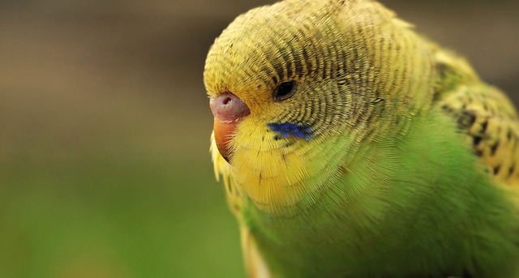
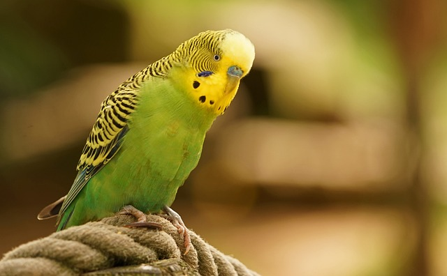

Budgie
Budgies: Colorful Companions with Playful Spirits

picture of a budgie
picture of a budgie
Budgies, also known as parakeets, enchant with their vibrant plumage, adorned with a
kaleidoscope of colors, while their playful and sociable nature adds an endearing charm
to these beloved avian companions.
Playful Companionship and Mimicry:
1. Social Creatures: Budgies thrive in the company of both their own kind and human
caregivers, seeking interaction, playtime, and forming strong bonds with their owners,
making them delightful companions for those seeking lively and engaging pets.
2. Masterful Mimics: Budgies showcase their remarkable ability to mimic sounds and
speech, often learning to imitate words and phrases, adding an entertaining and
interactive element to their presence in the household.

green budgie
Care and Nurturing:
1. Nutritious Diet: Providing a well-balanced diet consisting of fresh fruits,
vegetables, seeds, and specialized pellets is crucial to ensure budgies receive the
necessary nutrients for their health and vitality.
2. Mental Stimulation and Exercise: Budgies benefit from mental stimulation through
interactive toys, puzzles, and supervised flight time, allowing them to engage their
curious minds and maintain their physical well-being.
In conclusion, budgies bring a burst of color and playful energy to any household. Their
vibrant plumage, sociable nature, and ability to mimic speech make them cherished
companions, while their care and nurturing needs ensure a fulfilling and enriched life
for these delightful avian friends.
green budgie